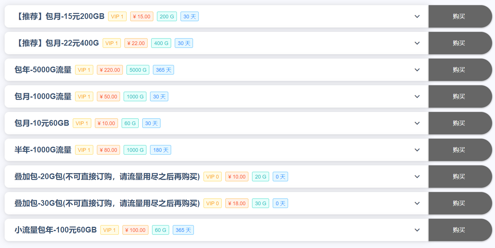
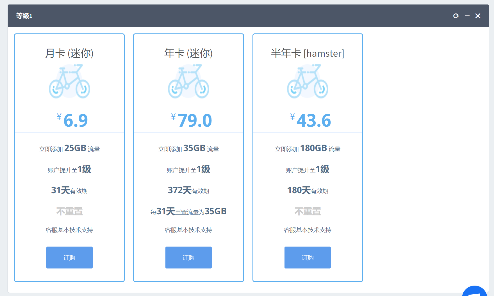
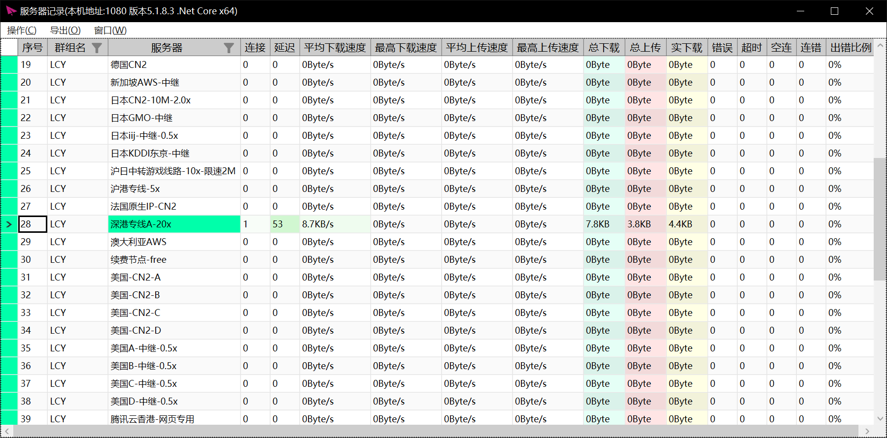
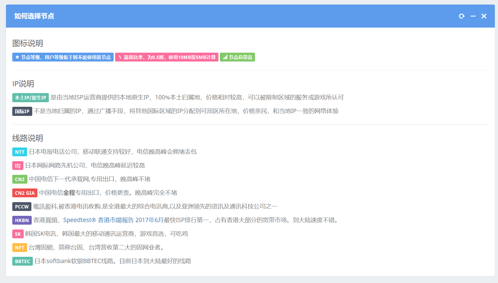
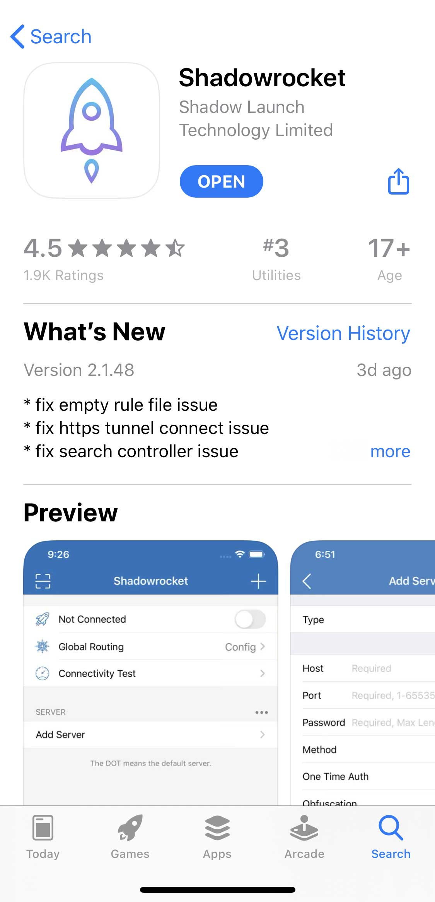
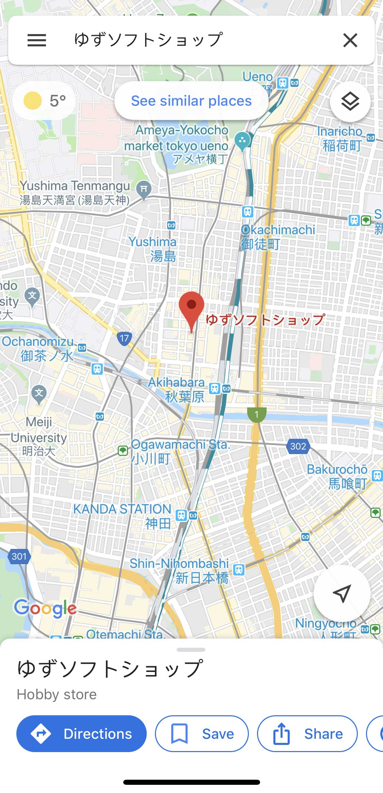

前言
关于SSR的用法其实自己也没有了解很透彻，仅仅学会满足了日常需要的一些用法， 而且所写的东西绝大部分都是自己的肤浅理解，并不能保证正确性。
这篇文章主要面向像我一样的毫无这方面知识的萌新，有一定的了解小伙伴可以直接移步这篇教程的 SSR食用方法 部分。
关于SSR的用法其实自己也没有了解很透彻，仅仅学会满足了日常需要的一些用法， 而且所写的东西绝大部分都是自己的肤浅理解，并不能保证正确性。
这篇文章主要面向像我一样的毫无这方面知识的萌新，有一定的了解小伙伴可以直接移步这篇教程的 SSR食用方法 部分。
SSR全称在开头的图中，经常被称为酸酸乳（取自缩写），也被称为小飞机（图标是一架纸飞机）。 由于SSR的纸飞机图标，所以提供SSR的服务商一般被称作“飞机场”。
SSR其实是SS（ShadowSocks）的升级版，这两个软件因为存在一些纠纷，再加上SSR和SS被广大拆腻子用于科学上网导致枪打出头鸟， 两个软件的作者纷纷被约去喝茶，最终导致两个软件的凉凉。原味的SSR在github上貌似是停留在了好几年前的4.7.0版本， 但是因为SSR是开源的，广义的SSR还是在各种迫害中繁荣发展。 当然这篇文章重点不在三角关系的爱恨情仇，大家有兴趣可以参考这个网站。
个人感觉SSR是众多翻墙手段中比较稳定并且划算的一种，虽然有那种很便宜的VPN,但那种VPN速度很慢，看外网的视频基本是不可能的，而SSR甚至都能满足打游戏的延迟要求，可见综合比较下还是SSR的性价比更高。 下面就给出两个SSR服务提供商的套餐表（分别对应下文中的机场A和机场B，截图日期：2020.1.24）。
 根据我之前的安利经验，很多小伙伴估计看到了还要限流量，就感觉很不划算。但实际上，从我一年来的使用经历来看，中度的视频和下载需求下， 一年也就花了200G+的流量，而且这两个SSR提供商都允许用户每天签到获得400M左右的流量，对于某些翻墙需求不是很大的小伙伴，甚至可以白嫖使用。
还有一个省钱技巧就是，部分SSR服务提供商在特定的日子会大力度打折，比如2020年的元旦，我一直用的那家（对应下文中的机场A），直接全场5折，微氪后大概就是80块1年加上2000G流量，还是非常划算的。
在我所知范围内，科学上网是有两种方法的，一种是VPN，另一种就是SSR。
VPN的原本用途是企业传输数据时，把数据加密以防止外泄的；而SSR是专门用于翻墙的。 因此，VPN注重的是数据的安全性，而SSR专注于数据的混淆，就是说把你的“非法”数据请求伪装成普通的合法请求。
SSR的工作原理用例子来解释就是，我部署了一台不受防火墙干扰的服务器，我在墙内的话，使用SSR把我的访问Google的请求混淆后发送给我自己的服务器， 服务器接收到请求后，在墙外把Google的页面数据下载后，混淆这个数据包，再送回墙内，这样我就能在GFW(Great Firewall)内向百度说再见了。原理简单来说就是有一个墙外的服务器做中介。（大概是这个亚子）
科学上网 = SSR客户端 + 飞机场（境外服务器提供商）
SSR的客户端我不是很建议使用飞机场提供的，因为可能被飞机场场主进行过魔改，之前我在我自己常用的机场下载的SSR客户端，就发现在家里用不了（在学校里没有问题） 但是换成github上另一个版本的SSR后就没有出现过这个问题。
由于自己设备有限，在下文中只提供iOS和Windows环境下的SSR原生客户端的教程。（如果有人愿意支援我一台Mac我是很乐意的）其他环境下的客户端可以凑合使用机场提供的。
一般来说，机场能提供很多个墙外服务器供用户使用，这些服务器可以提供不同的IP地址来满足不同的需求。 一个墙外服务器通常被称为一个节点。你访问墙外网站的速度取决于你与节点的连接速度，以及节点本身的网络带宽。 因此，节点的带宽和数量决定了一个机场的好坏。
机场由于是在法律的边缘疯狂试探，被封杀的可能性还是很大的。如果只是部分节点被封杀，只需要在机场提供的众多节点中换个能使的就行。如果是机场的网址被封杀，一般机场主会换一个新网址， 旧网址需要用户通过SSR或者VPN进行访问（如果机场主还在维护旧网址的话）。所以，为了防止与机场失联，建议隔一段时间就在SSR客户端更新一波节点列表。
讲点题外话，细心的小伙伴可能会发现机场的网站大同小异，这是因为github上有现成的模板，因此个人感觉机场是可以盈利的（即使机场主都声明多的钱用于购置新服务器和网站维护），或许这也是SSR还没死绝的原因之一。 也许，自己也有可能整个小型机场玩玩（现已加入有生之年系列），欢迎大家到时候来 捧场 给钱。
这里给出两个我用着觉得还不错的机场网址 机场A 和 机场B， 很希望大家通过这两个链接去注册，因为这些机场会将你们氪金的一部分返利给邀请者（疯狂暗示）。 正如刚刚说的，机场的网站是很不稳定的，裸连时可能会很慢甚至会出错（通过SSR连接的话会快很多），需要大家多尝试几次。
这两个里面我更推荐机场A（下面都是以机场A为例讲的），机场B是我最近才找到的，而机场A我自己用了一年多了。相比之下，机场A提供的节点更多，价格会更低一点。 机场B我很欣赏他们的网页设计，并且他们给的教程对萌新更为友好，大家也可以去参观参观。
SSR功能很强大，不同平台上的客户端大同小异，这里主要以Windows的SSR客户端来讲。
Step-1:点下载链接后，在最新的那个release里下载图中的这个文件。如果你的电脑是32位的就下载Win32版本的，不知道自己电脑是多少位的话，可以去百度搜“区分32位和64位系统”，
一般不是特别老的电脑都是64位系统（直接下载红框内的那个）。
Step-2:下载后解压，打开exe文件，弹出来的提示框选否，会打开订阅设置
Step-3:登录机场，在机场首页找到SSR节点订阅地址，把地址复制下来（这是机场A页面的一部分）
Step-4:回到SSR的订阅设置，在订设置里点添加，右边栏里订阅地址粘贴刚刚复制过的地址，订阅备注可以随意填，其他的地方建议不要动（等你看完这篇教程就可以瞎动了），最后按“确定并更新”
Step-5 系统代理:在任务栏右侧找到SSR的纸飞机图标，右键弹出菜单，打开系统代理子菜单
Step-6规则设置：规则设置主要是针对PAC模式和全局模式下的流量代理规则，第一个子菜单“更新PAC”就是PAC模式下的规则，第二个子菜单“代理规则”适用于上一步的全局模式，由于这两个子菜单里的选项都差不多，拿更为常用的“代理规则”里的选项来讲讲
Step-7
切换节点：日常使用时，上面两个一般设置为“全局系统代理”和“绕过局域网和大陆”。设置完成后，可能还是上不了Google，原因是SSR默认连接机场返回的节点列表中的第一个节点，而这个节点可能是不可用的，这时需要切换到可用节点。
打开连接统计，有两种方法，第一种是中键SSR任务栏图标，第二种是右键任务栏图标，在菜单中找服务器——连接统计。
连接统计里会有很详细的节点信息。平均下载速度其实就是当前通过SSR的流量速度，总下载是这个节点所有时间的下载量，实下载是本次使用SSR这个节点的下载量。要切换节点的话，在服务器那一栏左键点你想挂的节点就行了。
在这着重强调下节点名字的含义，也就是服务器那一栏。虽然每个机场可能给节点的命名规则不一样，但大同小异，具体的可以参考机场的公告。
名字前面的地区一般决定了你的IP地址段，这个针对部分锁IP的网站和游戏，比如P站会限制特定IP区间的流量才能访问，一般挂日本地区的节点就没什么大问题，但是你挂香港节点有可能就连不上。
名字后面的数字加乘号，表示机场的流量统计方式。拿图中我挂着的这个节点为例，后面写着20x，那么你实下载1M的流量，在机场那统计的流量使用量是1M x 20 =20M，因为深港专线服务器租赁费用比较高，能提供更快的连接速度和防止被墙。平时使用时要格外注意，防止发生我有一个朋友一天烧了80G流量的类似悲剧。（真的是我的一个朋友！）
如果大家对节点感兴趣的话，这里给出一张图（图来自机场B）和一个链接，讲的是比我强多了。
Step-8 OVER!：Windows上的SSR客户端的萌新科普就完结了，欢迎来到（回到）新世界！
iOS上的SSR客户端Shadowrocket反正我是觉得比Windows上的好使，而且Shadowrocket不仅支持SSR，还支持其他很多协议，虽然我除了SSR也不知道其他的咋用。
iOS上用SSR的难点在于下载客户端Shadowrocket，这个APP在国区的App Store里是搜不到的（显而易见的原因），只能到非国区的App Store去下载，香港、日本、美国的App Store都行。 但是前提是得有个非中国的苹果账号，这玩意还不是很好搞。不过如何注册日本或者美国地区的苹果账号的教程，百度上一抓一大把，啥时候有空了，说不定自己也会写（有生之年+2）。 反正我只记得我注册日区账号时，电话和住址填的是右下图中秋叶原的柚子社商店（滑稽）。
 千辛万苦注册好苹果账号后，你还得氪金买这个APP，貌似是3美金，所以你还得往你的苹果账号里充钱，首先你得有张master或者visa的信用卡。
这些本来都是些很麻烦的操作，直到万能的淘宝出现了。不论是苹果账号还是充钱，有钱能使鬼推磨，你都能在淘宝上享受一条龙服务。买号大概5RMB,买礼品卡充钱最少好像是5美金起卖，总成本就是40左右。（我美区账号淘宝买的，日区账号自己注册的，也不是那么麻烦）
实在两个都不想买的，可以找我py一下，诚恳地拿你们的女装照片来求我个几次，说不定我会勉为其难地答应。

使用SSR也快一年了，不知不觉中貌似已经习惯了墙内墙外往返跑的生活，一年的感受就是，Google是真的比百度简洁好用太多，Twitter用来学习英语和日语摸鱼是真的方便，偶尔上P站逛逛，看看B站的港澳台限定，再也不用担心steam和origin的各种乱七八糟的报错。 当SSR逐渐融入生活时，部分特殊时期导致墙突然变高时，节点纷纷挂掉，自己就像回到原始时代一样...
这篇自嗨絮絮叨叨一共也bb了4800多个字，自己码5天字256行代码不容易，大家看完更不容易，十分感谢大家愿意花费宝贵的时间看一个菜鸡的自言自语，能帮上各位一点点忙就很开心了，如有大佬发现任何错误，请随时通过任意联系方式戳我赐教，不胜荣幸~
ありがとうございます。
Fin~
评论区
由于自己过于辣鸡，写不出评论系统，只好接入第三方评论板块。非网站原生代码，所以可能加载起来会有点慢，请各位耐心等待一下下。